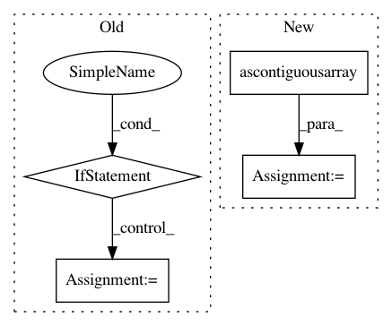

e1c2eeb25d5c11ad1b55862b9ea4cc5e55ed7516,GPy/kern/_src/stationary.py,Stationary,_lengthscale_grads_cython,#Stationary#Any#Any#Any#,187
Before Change
def _lengthscale_grads_cython(self, tmp, X, X2):
N,M = tmp.shape
Q = X.shape[1]
if hasattr(X, "values"):X = X.values
if hasattr(X2, "values"):X2 = X2.values
grads = np.zeros(self.input_dim)
stationary_cython.lengthscale_grads(N, M, Q, tmp, X, X2, grads)
return -grads/self.lengthscale**3
After Change
def _lengthscale_grads_cython(self, tmp, X, X2):
N,M = tmp.shape
Q = self.input_dim
X, X2 = np.ascontiguousarray(X), np.ascontiguousarray(X2)
grads = np.zeros(self.input_dim)
stationary_cython.lengthscale_grads(N, M, Q, tmp, X, X2, grads)
return -grads/self.lengthscale**3
In pattern: SUPERPATTERN
Frequency: 3
Non-data size: 4
Instances
Project Name: SheffieldML/GPy
Commit Name: e1c2eeb25d5c11ad1b55862b9ea4cc5e55ed7516
Time: 2015-04-28
Author: james.hensman@gmail.com
File Name: GPy/kern/_src/stationary.py
Class Name: Stationary
Method Name: _lengthscale_grads_cython
Project Name: RaRe-Technologies/gensim
Commit Name: acf1c19943158789cfbd1a15221612c1ce44abe1
Time: 2015-09-18
Author: radimrehurek@seznam.cz
File Name: gensim/models/word2vec.py
Class Name: Word2Vec
Method Name: load_word2vec_format
Project Name: SheffieldML/GPy
Commit Name: 9e4c33910fd97aa455b7063e330b51c21b63b963
Time: 2015-04-28
Author: james.hensman@gmail.com
File Name: GPy/kern/_src/stationary.py
Class Name: Stationary
Method Name: _gradients_X_cython